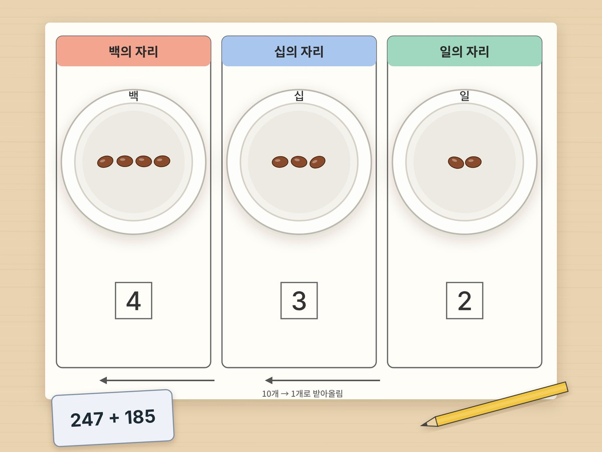

전체 단원 › 실험·활동 › 3학년 1학기 수학
종이컵 자릿값 계산판

종이컵 세 개에 백, 십, 일의 자리를 붙이고 콩을 옮기며, 받아올림과 받아내림이 왜 생기는지 손으로 확인해요.
만들기 10분 · 놀이 20분 · 난이도 ★☆☆ 쉬움
준비물
- 종이컵 3개 — 백·십·일의 자리 컵이 돼요
- 마른 콩이나 병뚜껑 30개 — 일의 자리 낱개로 써요
- (선택) 빨대 또는 이쑤시개 10개 — 콩 10개 = 십 묶음 1개라는 것을 먼저 보여 줄 때 고무줄로 묶어 써요. 계산판에서는 콩만 써요
- 자릿값 계산판 도안 — 아래에서 내려받아요
하는 방법
- 계산판 펼치기
도안을 인쇄해 책상에 놓고, 백·십·일 칸 위에 종이컵을 하나씩 올려요. 컵에 '백', '십', '일'이라고 적어요. - 수를 컵에 담기
예를 들어 247이면 백 컵에 2개, 십 컵에 4개, 일 컵에 7개를 넣어요. 같은 콩이라도 어느 컵에 있느냐에 따라 값이 달라져요. - 더하는 수 담기
247 + 185라면 185만큼 콩을 더 넣어요. 백 컵에 1개, 십 컵에 8개, 일 컵에 5개. - 일의 자리부터 정리
일 컵의 콩을 세어요. 7+5=12개! 10개를 빼서 십 컵에 콩 1개로 바꿔 넣어요. 이게 받아올림이에요. 일 컵에는 2개가 남아요. - 십, 백의 자리도 정리
십 컵이 4+8+1=13개가 되면 또 10개를 백 컵 1개로 바꿔요. 최종 답은 4, 3, 2. 즉 432예요. - 뺄셈은 거꾸로
예를 들어 432 − 185라면, 일 컵의 콩 2개에서 5개를 뺄 수 없으니 십 컵에서 1개를 꺼내 일 컵 콩 10개로 바꿔요(12 − 5 = 7). 이게 받아내림이에요. 십, 백의 자리도 같은 방법으로 빼요.
생각해 봐요
- 일 컵에 콩이 10개 넘게 있으면 왜 안 될까요?
- 십 컵의 콩 1개는 일 컵의 콩 몇 개와 같을까요?
- 받아올림이 두 번 생기는 덧셈 문제를 직접 만들어 볼 수 있나요?
왜 그럴까?
우리가 쓰는 수는 한 칸에 0부터 9까지만 들어갈 수 있어요. 10이 되면 한 칸 왼쪽으로 이사를 가요. 일의 자리 10개가 십의 자리 1개, 십의 자리 10개가 백의 자리 1개가 되는 거예요. 그래서 덧셈할 때 10이 넘으면 윗자리에 1을 올려 주는 거랍니다.
학교 교육과정 연결
- [4수01-03] 세 자리 수의 덧셈과 뺄셈의 계산 원리를 이해하고 그 계산을 할 수 있다.